install.packages("swirl") # Install swirl - this step will take around 2 minutes
library("swirl") # Load the swirl package to make it available for you to use
swirl() # Start swirlComputational Biology | Protocols general info
Hands-on Protocols
Welcome to Module 1 of the Computational Biology class. This course is ambitious. You will be challenged to learn many new concepts in a short amount of time. Do not hesitate to ask for help in order to gain the most out of these classes.
These classes are organized by protocols to be completed on each day:
- first you will get a brief introduction to R programming;
- then you will practice R by analysing a dataset using descriptive statistics, and learning some plotting functions to visualize the data;
- you will have a self-assessment exam to test your newly acquired R programming knowledge, and identify possible difficulties;
- finally, you will proceed with a Mini-project where you will perform a brief Exploratory Data Analysis (EDA) using R.
Keep calm and stay curious.
Introduction to R
- First, we will discuss the purpose of learning to program in R.
- Then, you will be introduced on how to install and use R and RStudio.
- Next, you will follow an interactive learning tutorial, self-paced, using the swirl package that you will be installing in your R.
- Finally, you will recap some important notes about R programming.
Questions to debate in class:
- Why do we need to use computer programming?
- Why do we use R?
- Are there other alternatives to R?
1. Using RStudio
The practical classes for this course require R and RStudio.
Please read the tab “Software requirements” to get information on how to install R and RStudio in your system, or how to use the software installed at the virtual machines from UAlg.
The friendliest way to learn R is to use RStudio which is an Integrated Development Environment - IDE - that includes:
- a text editor with syntax-highlighting (where you save the R code in a script to run again in the future);
- an R console to execute code (where the R instructions are executed and evaluated to generate the output);
- a workspace and history management;
- and tabs to visualize plots and exporting images, browsing the files in the workspace, managing packages, getting help with functions and packages, and viewing html/pdf or presentation files created within RStudio (using RMarkdown).
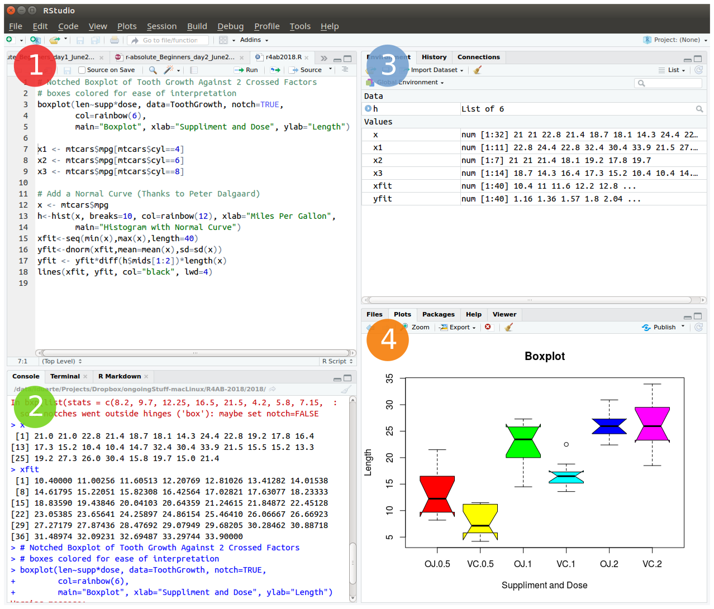
2. Install the swirl package & Follow the guided course
After you become familiarized with RStudio, we shall progress to the interactive, self-paced, hands-on tutorial provided by the swirl package. You will learn R inside R. For more info about this package, visit: https://swirlstats.com/
Type these instructions in the R console (panel number 2 of RStudio). The words after a # sign are called comments, and are not interpreted by R, so you do not need to copy them.
You can copy-paste the code, and press enter after each command.
After starting swirl, follow the instructions given by the program, and complete all of the following lessons:
Please install the course:
1: R Programming: The basics of programming in R
Choose the course:
1: R Programming
Complete the following lessons, in this order:
1: Basic Building Blocks
3: Sequences of Numbers
4: Vectors
5: Missing Values
6: Subsetting Vectors
7: Matrices and Data Frames
8: Logic
12: Looking at Data
15: Base Graphics
Please call the instructor for any question, or if you require help.
Now, just Keep Calm… and Good Work!
Review & Extra notes about R and RStudio
After finishing the introduction to R with swirl, please recall the following information and hints about R and R programming.
- R is case sensitive - be aware of capital letters (b is different from B).
- All R code lines starting with the # (hash) sign are interpreted as comments, and therefore are not evaluated.
# This is a comment
# 3 + 4 # this code is not evaluated, so and it does not print any result
2 + 3 # the code before the hash sign is evaluated, so it prints the result (value 5)[1] 5- Expressions in R are evaluated from the innermost parenthesis toward the outermost one (following proper mathematical rules).
# Example with parenthesis:
((2+2)/2)-2[1] 0# Without parenthesis:
2+2/2-2[1] 1- Spaces in variable names are not allowed — use a dot
.or underscore_to create longer names to make the variables more descriptive, e.g.my.variable_name.
- Spaces between variables and operators do not matter:
3+2is the same as3 + 2, andfunction (arg1 , arg2)is the same asfunction(arg1,arg2).
- A new line (enter) ends one command in R. If you want to write 2 expressions/commands in the same line, you have to separate them by a
;(semi-colon).
#Example:
3 + 2 ; 5 + 1 [1] 5[1] 6- To access the help pages on R functions, just type
help(function_name)or?function_name.
# Example: open the documentation about the function sum
help (sum)
# Quick access to help page about sum
?sum RStudio auto-completes your commands by showing you possible alternatives as soon as you type 3 consecutive characters. If you want to see the options for less than 3 chars to get help on available functions, just press tab to display available options. Tip: Use auto-complete as much as possible to avoid typing mistakes.
There are 4 main vector data types in R: Logical (TRUE or FALSE); Numeric (e.g. 1,2,3…); Character (i.e. text, for example “universidade”, “do”, “Algarve”) and Complex (e.g. 3+2i).
Vectors are ordered sets of elements. In R vectors are 1-based, i.e. the first index position is number 1 (as opposed to other programming languages whose indexes start at zero, like Python).
R objects can be divided in two main groups: Functions and Data-related objects. Functions receive arguments inside circular brackets
( )and objects receive arguments inside square brackets[ ]:function (arguments)
data.object [arguments]There are five basic data structures in R:
Vector,Matrix,Array,Data frame, andList(see following figure):

12.1 The basic data structure in R is the vector, which requires all of its elements to be of the same type (e.g. all numeric; all character (text); all logical (TRUE or FALSE)).
12.2 Matrices are two dimensional vectors (tables), where all columns are of the same length, and all from the same type.
12.3 Data frames are the most flexible and commonly used R data structures, used to store datasets in spreadsheet-like tables. The columns can be vectors of different types (i.e. text, number, logical, etc, can all be stored in the same data frame), but each column must to be of the same data type.
12.4 Lists are ordered sets of elements, that can be arbitrary R objects (vectors, data frames, matrices, strings, functions, other lists etc), and heterogeneous, i.e. each element can be of a different type and different lengths.
- R is column-major by default, meaning that the elements of a multi-dimensional array are linearly stored in memory column-wise. This is important for example when using data to populate a
matrix.
matrix(1:9, ncol = 3) [,1] [,2] [,3]
[1,] 1 4 7
[2,] 2 5 8
[3,] 3 6 9- When subsetting matrices and data-frames, the first index is the row, and the second index is the column. If left empty (no value), then the full row or the full column is returned.
# My letters matrix
(my_letters <- matrix(rep(LETTERS[1:3], each=3), ncol = 3)) [,1] [,2] [,3]
[1,] "A" "B" "C"
[2,] "A" "B" "C"
[3,] "A" "B" "C" # Element in Row 1, Column 2
my_letters[1,2][1] "B"# Element in Row 2, Column 3
my_letters[2,3][1] "C"# Row 3
my_letters[3,][1] "A" "B" "C"# Column 1
my_letters[,1][1] "A" "A" "A"Working directory
The working directory is the location in the filesystem (folder) where R will look for input data and where it will save the output from your analysis. In RStudio you can graphically check this information.
dir() # list all files in your working directory
getwd() # find out the path to your working directory
setwd("/home/isabel") # example of setting a new working directory pathSaving your workspace in R
The R environment is controlled by hidden files (files that start with a dot .) in the start-up directory: .RData, .Rhistory and .Rprofile (optional).
- .RData is a file containing all the objects, data, and functions created during a work-session. This file can then be loaded for future work without requiring the re-computation of the analysis. (Note: it can potentially be a very large file);
- .Rhistory saves all commands that have been typed during the R session;
- .Rprofile useful for advanced users to customize RStudio behavior.
These files can be renamed:
# DO NOT RUN
save.image (file=“myProjectName.RData”)
savehistory (file=“myProjectName.Rhistory”)To quit R just close RStudio, or use the q () function. You will then be asked if you want to save the workspace image (i.e. the .RData file):
q()Save workspace image to ~/path/to/your/working/directory/.RData? [y/n/c]:
If you type y (yes), then the entire R workspace will be written to the .RData file (which can be very large). Often it is sufficient to just save an analysis script (i.e. a reproducible protocol) in an R source file. This way, one can quickly regenerate all data sets and objects for future analysis. The .RData file is particularly useful to save the results from analyses that require a long time to compute.
In RStudio, to quit your session, just hit the close button (x button), just like when you want to quit any other application in your computer.
Package repositories
In R, the fundamental unit of shareable code is the package. A package bundles together code, data, documentation, and tests, and is easy to share with others. These packages are stored in online repositories from which they can be easily retrieved and installed on your computer (R packages by Hadley Wickham). There are 2 main R repositories:
- The Comprehensive R Archive Network - CRAN (23291 packages in March 2026)
- Bioconductor (2361 packages in March 2026) (bioscience data analysis)
This huge variety of packages is one of the reasons why R is so successful: the chances are that someone has already developed a method to solved the problem that you’re working on, and you can benefit from their work by downloading their package for free.
In this course, we will not use many packages. However, if you continue to use R for your data analyses you will need to install many more useful packages, particularly from Bioconductor — an open source, open development software project to provide tools for the analysis and comprehension of high-throughput genomics data.
How to Install and Load packages
There are several alternative ways to install packages in R. Depending on the repository from which you want to install a package, there are dedicated functions that facilitate this task:
install.packages()built-in function to install packages from the CRAN repository;BiocManager::install()to install packages from the Bioconductor repository;remotes::install_githubto install packages from GitHub (a code repository, not dedicated to R);pak::pkg_install()thepakpackage installs packages from CRAN, Bioconductor and even github and other remote repositories.
After installing a package, you must load it to make its contents (functions and/or data) available. The loading is done with the function library(). Alternatively, you can prepend the name of the package followed by :: to the function name to use it (e.g. ggplot2::qplot()).
install.packages("ggplot2") # install the package called ggplot2 from CRAN
library ("ggplot2") # load the library ggplot2
help (package=ggplot2) # help(package="package_name") to get help about a specific package
vignette ("ggplot2") # show a pdf with the package manual (called R vignettes)Creating an RStudio project
RStudio Projects are a great functionality, easing the transition between dataset analyses, and allowing a fast navigation to your analysis/working directory. To create a new project:
File > New Project... > New Directory > New Project
Directory name: compBiol_module1
Create project as a subdirectory of: ~/
Browse... (directory/folder to save the class data)
Create ProjectProjects should be personalized by clicking on the menu in the right upper corner. The general options - R General - are the most important to customize, since they allow the definition of the RStudio “behavior” when the project is opened. The following suggestions are particularly useful:
Restore .RData at startup - Yes (for analyses with +1GB of data, you should choose "No")
Save .RData on exit - Ask
Always save history - Yes
Descriptive statistics in R
To practice your newly acquired R skills, you will be doing a brief summary statistics analysis of a simple dataset.
The scientific experiment | Imagine that you are interested in determining if a high-fat diet causes mice to gain weight, after one month. For this study, the scientists obtained data from 60 mice, where half were fed a lean-diet, and the other half a high-fat diet. All other living conditions were the same. Four weeks after, all mice were weighted, and the sex and age were also recorded. The results were saved in
mice_data.txtfile.
Start by discussing the experimental design
- What is the research question? What is the hypothesis?
- How many variables are in the study?
- Which variable(s) are dependent? (Dependent or Response variables are the variables that we are interested in predicting or explaining.)
- Which variable(s) are independent? (Independent or Explanatory variables are used to explain or predict the dependent variable.)
- Which variable(s) are covariates? (Covariates are variables that are potentially related to the outcome of interest in a study, but are not the main variable under study - used to control for potential confounding factors in a study.)
- Are the “controls” appropriate? Why?
Recall the most common variable types. The types of the variables will define the analyses and visualizations that are possible.
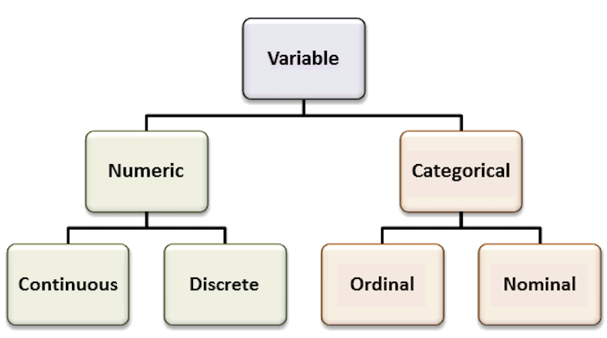
Create a new R script file
In order to save your work, you must create a new R script file. Go to File > New File > R Script. A blank text file will appear above the console. Save it to your project folder with the name compBiol_mice.R
Important Note | Why do we need scripts?
A script is a text file with a sequence of instructions that the computer runs to perform a task.
In R, you save the commands used in your analysis so you can run them again later. This makes your work reproducible, objective, and easy to update if the data change.
Although writing a script takes time at first, it allows you to work more efficiently in the long term. You can also share it with collaborators so they can review, improve, or extend your work. Many scientific journals now require authors to submit the analysis scripts with their manuscripts.
Load data and inspect it
- Download the file
mice_data.txt(mice weights according to diet) from here.
- Save the file in your current working directory where the RProject was created.
- Type the instructions inside grey boxes in pane number 2 of RStudio — the R Console. As you already know, the words after a
#sign are comments not interpreted by R, so you do not need to copy them.- In the R console, you must hit
enterafter each command to obtain the result. - In the script file (R file), you must
runthe command by pressing the run button (on the top panel), or by selecting the code you want to run and pressingctrl + enter.
- In the R console, you must hit
- Save all your relevant/final commands (R instructions) to your script file to be available for later use.
# Load the file and save it to object mice_data
mice_data <- read.table(file="data/mice_data.txt", header = TRUE,
sep = "\t", dec = ".",
stringsAsFactors = TRUE)# Briefly explore the dataset
View (mice_data) # Open a tab in RStudio showing the whole tablehead (mice_data, 10) # Show the first 10 rows diet weight gender age_months
1 lean 24.02 F 19
2 lean 21.79 F 17
3 lean 23.90 F 20
4 lean 11.15 M 10
5 lean 17.73 F 15
6 lean 12.89 M 12
7 lean 20.12 F 16
8 lean 23.04 F 18
9 lean 22.84 F 19
10 lean 18.92 M 15tail (mice_data, 10) # Show the last 10 rows diet weight gender age_months
51 fat 23.75 M 18
52 fat 21.84 M 17
53 fat 26.60 F 20
54 fat 21.13 M 17
55 fat 24.20 M 19
56 fat 30.69 M 23
57 fat 23.99 F 18
58 fat 19.35 M 17
59 fat 26.37 F 22
60 fat 28.84 M 20str(mice_data) # Describe the class of each column in the dataset'data.frame': 60 obs. of 4 variables:
$ diet : Factor w/ 2 levels "fat","lean": 2 2 2 2 2 2 2 2 2 2 ...
$ weight : num 24 21.8 23.9 11.2 17.7 ...
$ gender : Factor w/ 2 levels "F","M": 1 1 1 2 1 2 1 1 1 2 ...
$ age_months: int 19 17 20 10 15 12 16 18 19 15 ...summary (mice_data) # Get the summary statistics for all columns diet weight gender age_months
fat :30 Min. :10.62 F:30 Min. :10.00
lean:30 1st Qu.:19.24 M:30 1st Qu.:17.00
Median :22.79 Median :18.00
Mean :22.43 Mean :17.98
3rd Qu.:25.63 3rd Qu.:20.00
Max. :34.76 Max. :24.00 To facilitate further analysis, we will create 2 separate data frames: one for each type of diet.
# Filter the diet column by lean or fat and save results in a data frame
lean <- subset (mice_data, diet == "lean")
fat <- subset (mice_data, diet == "fat")
# Look at the new tables
head (lean) diet weight gender age_months
1 lean 24.02 F 19
2 lean 21.79 F 17
3 lean 23.90 F 20
4 lean 11.15 M 10
5 lean 17.73 F 15
6 lean 12.89 M 12head (fat) diet weight gender age_months
31 fat 15.67 F 14
32 fat 28.18 M 22
33 fat 29.50 M 22
34 fat 23.89 M 20
35 fat 21.61 F 18
36 fat 25.53 M 21Descriptive statistics and Plots using R
Now, we should look at the distributions of the variables. First we will use descriptive statistics that summarize the sample data. We will use measures of central tendency — Mean, Median, and Mode —, and measures of dispersion (or variability) — Standard Deviation, Variance, Maximum, and Minimum.
# Summary statistics per type of diet - min, max, median, average, standard deviation and variance
summary(lean) # quartiles, median, mean, max and min diet weight gender age_months
fat : 0 Min. :10.62 F:20 Min. :10.00
lean:30 1st Qu.:17.86 M:10 1st Qu.:15.00
Median :20.86 Median :17.00
Mean :20.37 Mean :16.77
3rd Qu.:23.03 3rd Qu.:18.75
Max. :30.12 Max. :22.00 sd (lean$weight) # standard deviation of the weight[1] 4.86655var(lean$weight) # variance of the weight (var=sd^2)[1] 23.68331summary(fat) diet weight gender age_months
fat :30 Min. :15.46 F:10 Min. :14.00
lean: 0 1st Qu.:21.71 M:20 1st Qu.:18.00
Median :24.11 Median :19.00
Mean :24.50 Mean :19.20
3rd Qu.:27.79 3rd Qu.:20.75
Max. :34.76 Max. :24.00 sd (fat$weight) [1] 4.484297var(fat$weight)[1] 20.10892How is the variable “mouse weight” distributed in each diet? | Histograms
After summarizing the data, we should find appropriate plots to look at it. A first approach is to look at the frequency of the mouse weight values per diet using a histogram.
Recall | Histograms plot the distribution of a continuous variable (x-axis), in which the data is divided into a set of intervals (or bins), and the count (or frequency) of observations falling into each bin is plotted as the height of the bar.
# install.packages("ggplot2") # package for plotting
# install.packages("RColorBrewer") # color palettes
# install.packages("patchwork") # combine plots
library(ggplot2)Warning: package 'ggplot2' was built under R version 4.5.1library(RColorBrewer)
library(patchwork)
# Lean diet histogram
ggplot(lean, aes(x = weight)) +
geom_histogram(
binwidth = 5,
color="white",
fill="skyblue1"
) +
labs(
x = "Mouse weight",
title = "Lean Diet | Histogram of mouse weight",
subtitle = "Binwidth = 5"
) +
theme_minimal() -> lean_histogram # save the plot
# Print the plot
lean_histogram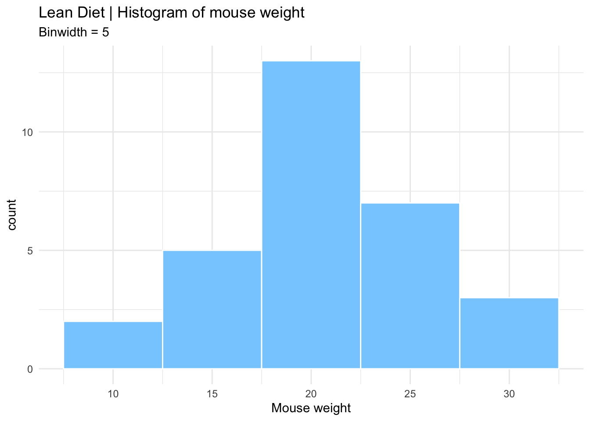
# Fat diet histogram
ggplot(fat, aes(x = weight)) +
geom_histogram(
binwidth = 1,
color="white",
fill="seagreen3"
) +
labs(
x = "Mouse weight",
title = "Fat Diet | Histogram of mouse weight",
subtitle = "Binwidth = 1"
) +
theme_minimal() -> fat_histogram # save the plot
# Print the plot
fat_histogram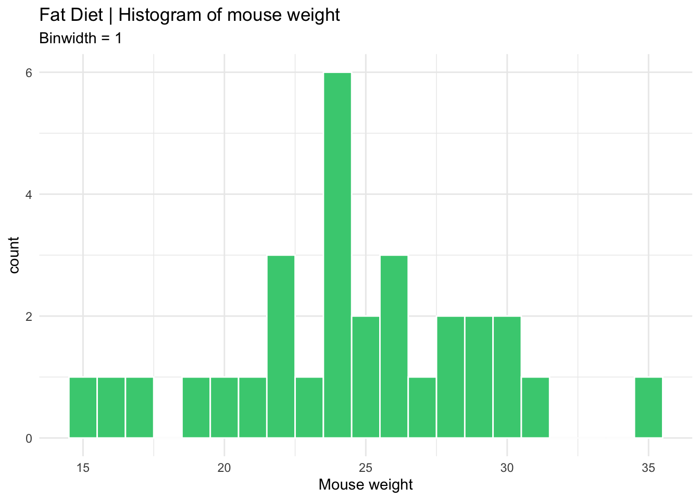
# Combine both histograms in the same plot using patchwork
# Notice the different y axis scales
lean_histogram + fat_histogram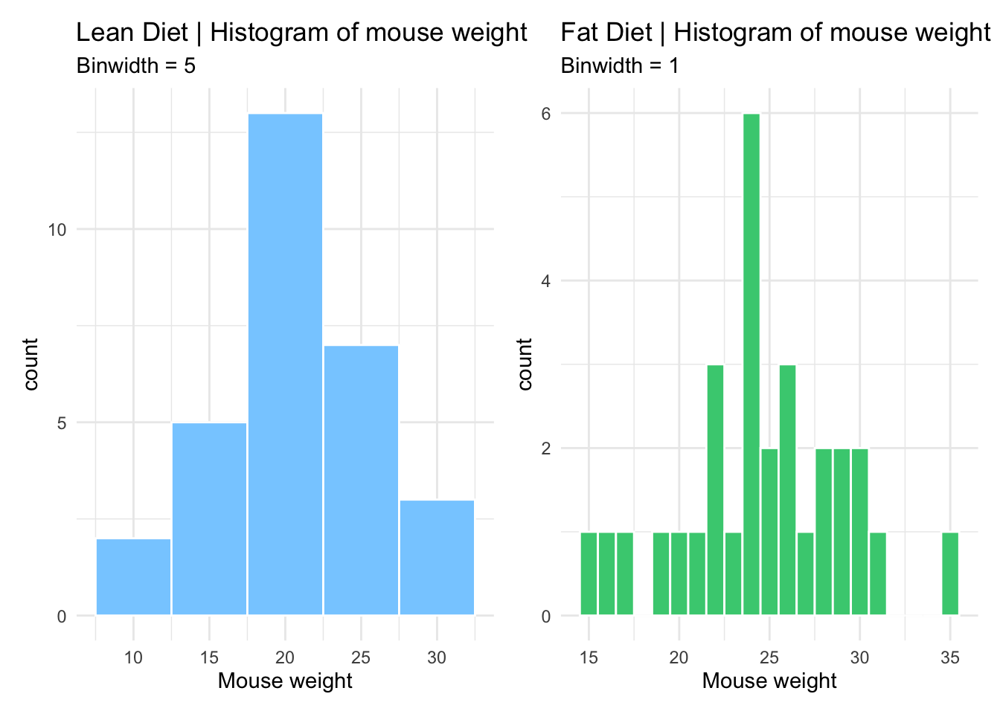
# Combine histograms with ggplot2 faceting
# Axis scales can be formatted (the same or individual)
ggplot(mice_data, aes(x=weight, fill=diet)) +
geom_histogram(binwidth=5, color="white") +
facet_grid(~ diet)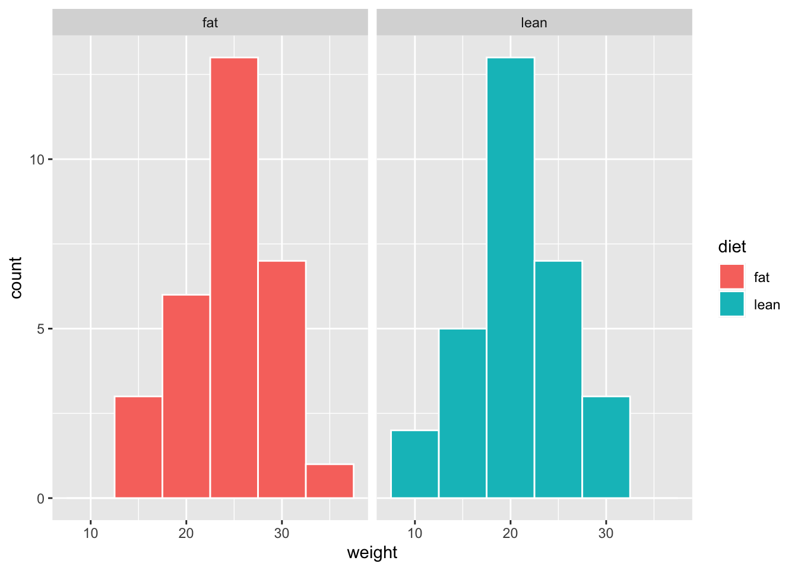
How is the variable “mouse weight” distributed in each diet? | Boxplots
Since our data of interest is one categorical variable (type of diet), and one continuous variable (weight), a boxplot is one of the most informative.
Note | A boxplot represents the distribution of a continuous variable. The box in the middle represents the interquartile range (IQR), which is the range of values from the first quartile to the third quartile, and the line inside the box represents the median value (i.e. the second quartile). The lines extending from the box are called whiskers, and represent the range of the data outside the box, i.e. the maximum and the minimum, excluding any outliers, which are shown as points outside the whiskers (not present in this dataset). Outliers are defined as values that are more than 1.5 times the IQR below the first quartile or above the third quartile.
# Box and whiskers plot - BASIC
ggplot(mice_data, aes(x=diet, y=weight)) +
geom_boxplot()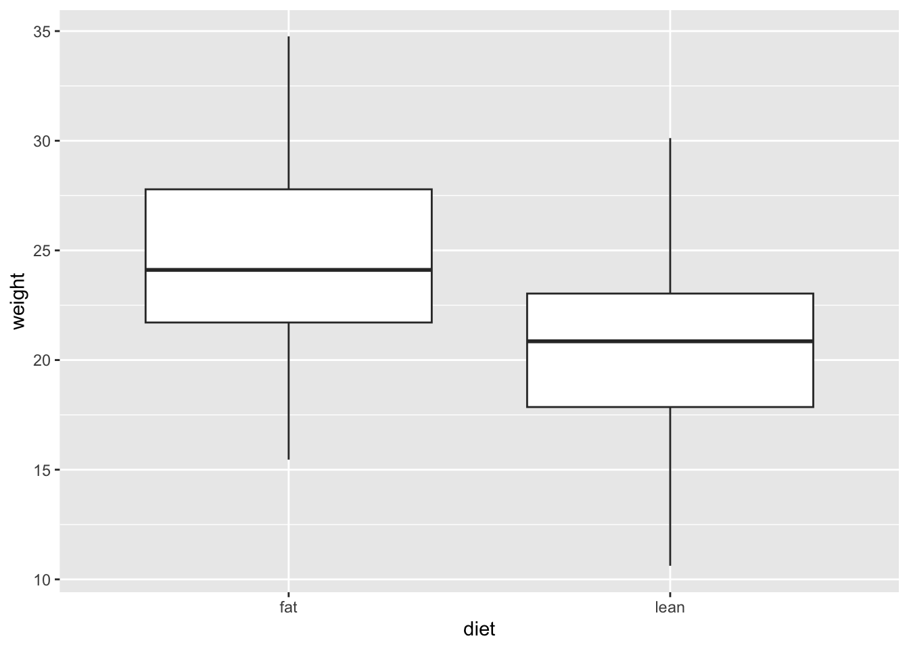
# Add color (from default ggplot palette)
ggplot(mice_data, aes(x=diet, y=weight)) +
geom_boxplot(aes(fill=diet))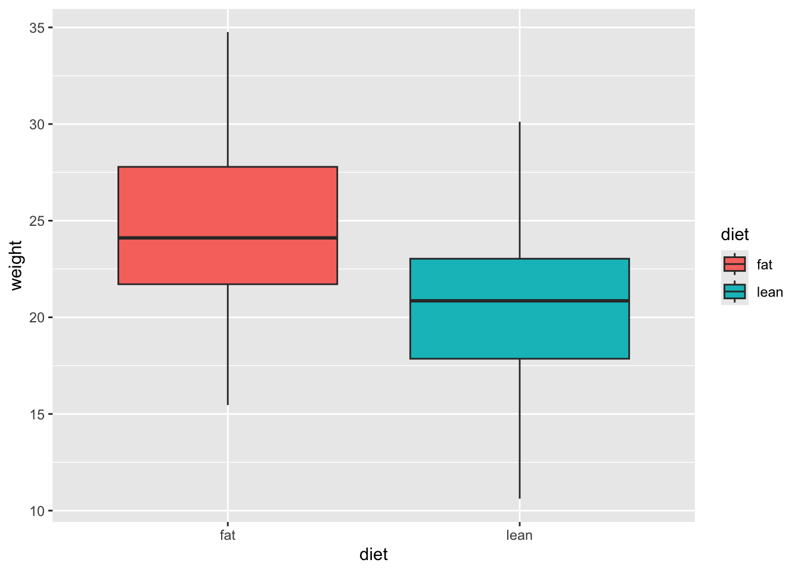
# Choose the colors, add X and Y axis names and the Title
# Notice that the fill argument is not inside the aesthetics function
ggplot(mice_data, aes(x=diet, y=weight)) +
geom_boxplot(fill=c("lightpink", "lightgreen")) +
labs(x = "Diet",
y = "Mouse weight (g)",
title = "Boxplot of mouse weight"
)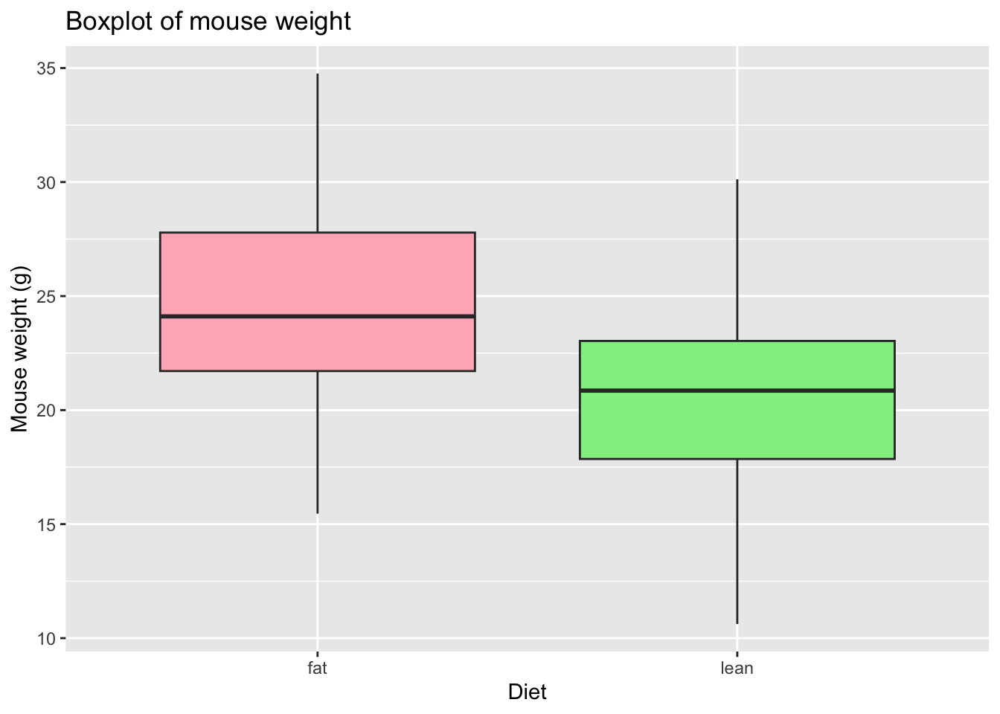
# Add points to the boxplot
ggplot(mice_data, aes(x = diet, y = weight)) +
geom_boxplot(
fill = c("lightpink", "lightgreen")
) +
geom_jitter(
width = 0.15, # horizontal spread
alpha = 0.7, # transparency
size = 2
) +
labs(
x = "Diet",
y = "Mouse weight (g)",
title = "Boxplot of mouse weight"
)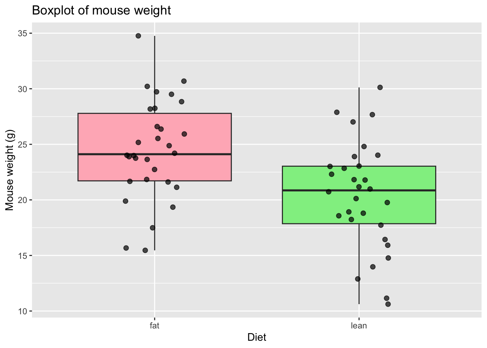
How are the other variables distributed?
There are other variables in our data for each mouse that could influence the results, namely gender (categorical variable) and age (discrete variable). We should also look at these data.
Note | A barplot represents the distribution of a categorical variable or the summary of a continuous variable across categories. Each bar corresponds to a category, and its height represents the value associated with that category, typically the count (frequency) or the proportion of observations.
When summarising a continuous variable, the height of the bar usually represents a summary statistic, such as the mean or the median, computed within each category.
The bars are separated by spaces to emphasise that the categories are discrete and do not have an intrinsic numerical continuity.
# Boxplot of diet and gender
ggplot(mice_data, aes(x=interaction(diet, gender), y=weight,
fill=interaction(diet, gender))) +
geom_boxplot() +
geom_jitter(
width = 0.15, # horizontal spread
alpha = 0.7, # transparency
size = 2 # point size
) +
labs(
x = "Diet and Gender interaction",
y = "Mouse weight (g)",
title = "Boxplot of mouse weights per diet type and gender"
)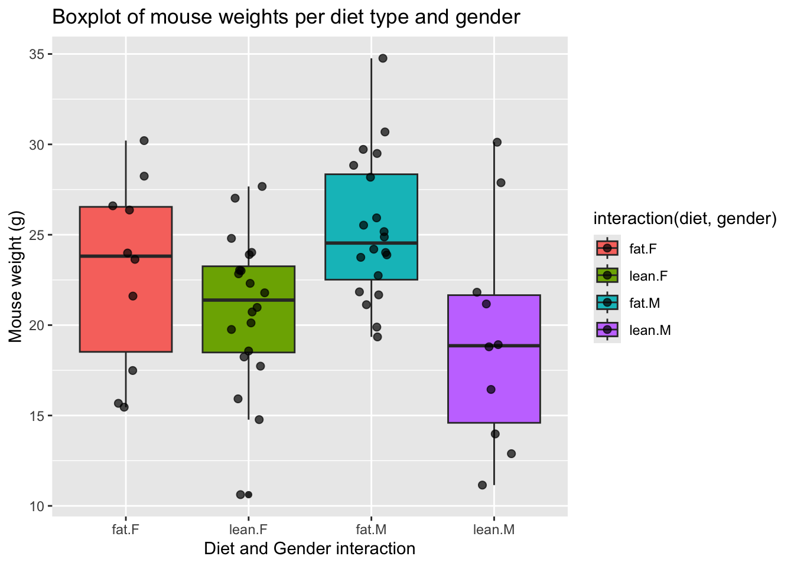
# Barplot of mice age
ggplot(mice_data, aes(x=age_months)) +
geom_bar(fill="mediumpurple1",
color="white") +
labs(
x = "Mice age (months)",
y = "Count",
title = "Barplot of mice age"
) +
theme_light() # simple and light background for the plot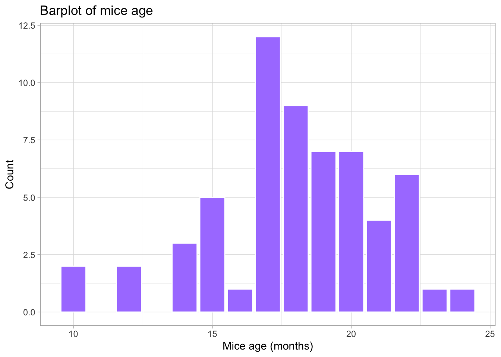
What is the frequency of each variable?
When exploring the results of an experiment, we want to learn about the variables measured (age, gender, weight), and how many observations we have for each variable (number of females, number of males …), or combination of variables, for example, number of females in lean diet. This is easily done by using the function table. This function outputs a frequency table, i.e. the frequency (counts) of all combinations of the variables of interest.
# How many measurements do we have for each gender (a categorical variable)
table(mice_data$gender)
F M
30 30 # How many measurements do we have for each diet (a categorical variable)
table(mice_data$diet)
fat lean
30 30 # How many measurements do we have for each gender in each diet?
# (Count the number of observations in the combination between
# the two categorical variables).
table(mice_data$diet, mice_data$gender)
F M
fat 10 20
lean 20 10# We can also use this for numerical discrete variables, like age.
# How many measurements of each age (a discrete variable) do we have by gender?
table(mice_data$age_months, mice_data$gender)
F M
10 1 1
12 0 2
14 3 0
15 3 2
16 1 0
17 7 5
18 4 5
19 4 3
20 3 4
21 1 3
22 3 3
23 0 1
24 0 1# And by diet type?
table(mice_data$age_months, mice_data$diet)
fat lean
10 0 2
12 0 2
14 2 1
15 1 4
16 0 1
17 3 9
18 6 3
19 4 3
20 6 1
21 1 3
22 5 1
23 1 0
24 1 0# What if we want to know the results for each of the three variables:
# age, diet and gender? Using ftable instead of table to format the
# output in a more friendly way
ftable(mice_data$age_months, mice_data$diet, mice_data$gender) F M
10 fat 0 0
lean 1 1
12 fat 0 0
lean 0 2
14 fat 2 0
lean 1 0
15 fat 1 0
lean 2 2
16 fat 0 0
lean 1 0
17 fat 0 3
lean 7 2
18 fat 2 4
lean 2 1
19 fat 1 3
lean 3 0
20 fat 2 4
lean 1 0
21 fat 0 1
lean 1 2
22 fat 2 3
lean 1 0
23 fat 0 1
lean 0 0
24 fat 0 1
lean 0 0Bivariate Analysis | Linear regression and Correlation coefficient
Is there a dependency between the age and the weight of the mice in our study?
To test if two variables are correlated we will start by:
- Making a scatter plot of these two variables;
- Followed by a calculation of the Pearson correlation coefficient;
- Finally, fitting a linear model to the data to evaluate how the weight changes depending on the age of the mice.
# First step: scatter plot of age and weight
# Note that the dependent variable is the weight, so it should be in the y axis,
# and the independent variable (age) should be in the x axis.
ggplot(mice_data, aes(x=age_months, y=weight)) +
geom_point(shape=19, size=2)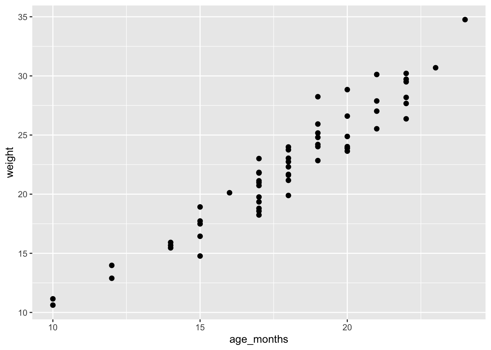
# Second step: Calculate the Pearson coefficient of correlation (r)
my.correlation <- cor(mice_data$weight,
mice_data$age_months,
method = "pearson")
my.correlation[1] 0.9539404# Third step: fit a linear model (using the function lm) to check the coefficients overall
my.lm <- lm (weight ~ age_months, data=mice_data)
my.lm
Call:
lm(formula = weight ~ age_months, data = mice_data)
Coefficients:
(Intercept) age_months
-6.487 1.608 # Fit a line with confidence interval
ggplot(mice_data, aes(x = age_months, y = weight)) +
geom_point(shape = 19, size = 2.5, alpha = 0.7) +
geom_smooth(method = "lm", se = TRUE, formula = y ~ x) +
labs(
y = "Weight (g) [Dependent variable]",
x = "Age (months) [Independent variable]"
)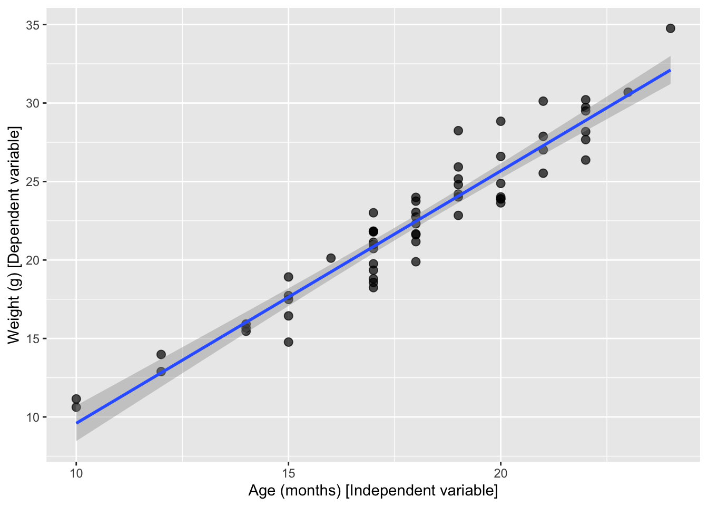
# Fit one line per diet type
# Just add a color grouping and ggplot fits one line per group
ggplot(mice_data, aes(x = age_months, y = weight, color = diet)) +
geom_point(shape = 19, size = 2.5, alpha = 0.7) +
geom_smooth(method = "lm", se = FALSE, formula = y ~ x) +
labs(
y = "Weight (g) [Dependent variable]",
x = "Age (months) [Independent variable]",
color = "Diet"
)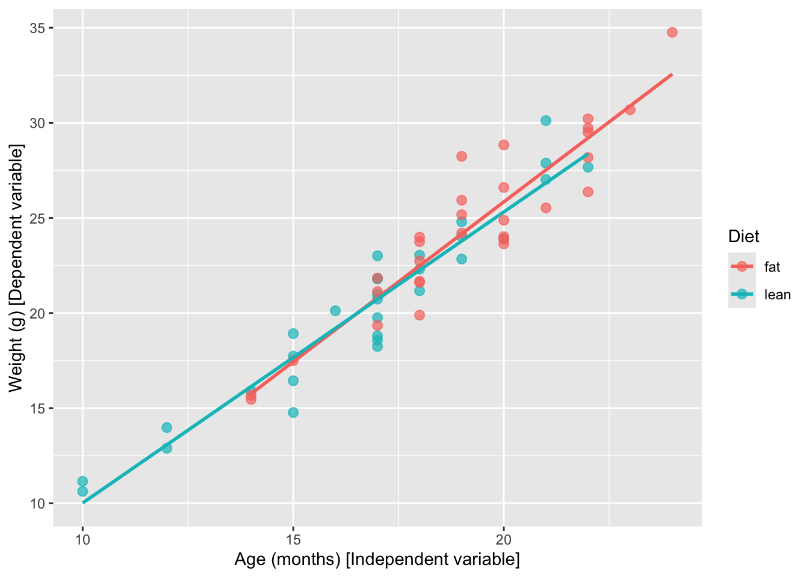
Hypothesis testing and Statistical significance using R
Going back to our original question: Does the type of diet influence the body weight of mice?
Can we answer this question just by looking at the plot? Are these observations compatible with a scenario where the type of diet does not influence body weight?
Remember the basic statistical methods:

Here enters hypothesis testing. In hypothesis testing, the investigator formulates a null hypothesis (H0) that usually states that there is no difference between the two groups, i.e. the observed weight differences between the two groups of mice occurred only due to sampling fluctuations (like when you repeat an experiment drawing samples from the same population). In other words, H0 corresponds to an absence of effect.
The alternative hypothesis (H1), just states that the effect is present between the two groups, i.e. that the samples were taken from different populations.
Hypothesis testing proceeds with using a statistical test to try and reject H0. For this experiment, we will use a T-test that compares the difference between the means of the two diet groups, yielding a p-value that we will use to decide if we reject the null hypothesis, at a 5% significance level (p-value < 0.05). Meaning that, if we repeat this experiment 100 times in different mice, in 5 of those experiments we will reject the null hypothesis, even thought the null hypothesis is true.
# Apply a T-test to the lean and fat diet weights
### Explanation of the arguments used ###
# alternative="two.sided": two-sided because we want to test any difference
# between the means, and not only weight gain or weight loss
# (in which case it would be a one-sided test)
# paired=FALSE: because we measured the weight in 2 different groups of mice
# (never the same individual). If we measure a variable 2 times in the same
# individual the data would be paired.
# var.equal=TRUE: T-tests apply to equal variance data, so we assume it is
# TRUE and ask R to estimate the variance (if we chose FALSE, then R uses
# another similar method called Welch (or Satterthwaite) approximation)
ttest <- t.test(lean$weight, fat$weight,
alternative="two.sided",
paired = FALSE,
var.equal = TRUE)
# Print the results
ttest
Two Sample t-test
data: lean$weight and fat$weight
t = -3.4197, df = 58, p-value = 0.001154
alternative hypothesis: true difference in means is not equal to 0
95 percent confidence interval:
-6.550137 -1.713197
sample estimates:
mean of x mean of y
20.36700 24.49867 Now that we have calculated the T-test, shall we accept or reject the null hypothesis? What are the outputs in R from the t-test?
# Find the names of the output from the function t.test
names(ttest) [1] "statistic" "parameter" "p.value" "conf.int" "estimate"
[6] "null.value" "stderr" "alternative" "method" "data.name" # Extract just the p-value
ttest$p.value[1] 0.00115364Final discussion
Take some time to discuss the results with your classmates, and decide if H0 should be rejected or not, and how confident you are that your decision is reasonable. Can you propose solutions to improve your confidence on the results? Is the experimental design appropriate for the research question being asked? Is this experiment well controlled and balanced?
Self-evaluation exam
The first task for today is to complete an individual self-evaluating exam, where you will have one hour to answer some data analysis questions using R. This is not for performance evaluation, meaning that the correctness of your answers will not be evaluated, but your application, participation, helping your colleagues will be evaluated. It is mostly intended for you to identify your difficulties and consolidate knowledge.
- For this exam, please install the
ualg.compbiopackage:
# Make sure you have the package `pak` installed:
install.packages("pak")
# Now you can install the ualg.compbio package from GitHub:
pak::pkg_install("instructr/ualg.compbio")- Run the
self_eval_examfrom theualg.compbiopackage:
learnr::run_tutorial("self_eval_exam", package = "ualg.compbio")- Please complete the exam. You have 60 minutes.
Exploratory data analysis
Exploratory data analysis (EDA) is the first structured step in any data-driven project. Its purpose is not hypothesis testing, but understanding:
- What variables are available?
- What types of data do we have?
- Are there missing values?
- What are the main distributions and relationships?
- Are there obvious patterns or anomalies?
The zebrafish dataset
In this project, we will analyse a simulated dataset called zebrafish. It represents an experiment in which animals from different strains were raised under controlled conditions. At a defined developmental stage, they were assigned to different groups: wild-type (WT) controls and genetically modified lines (knock-out or overexpression of a gene of interest).
At the end of the study, each animal was measured using a standard protocol. Researchers recorded several morphological measurements, as well as the biological sex to study potential sex differences, as well as the year of the experiment to account for possible batch effects.
The dataset combines experimental factors (strain, treatment, year) with quantitative morphological measurements, allowing the study of how genetic modifications affect growth and body traits, including potential differences between sexes.
1. Load packages and data
We begin by loading the required packages and the dataset.
#Load required package
library(tidyverse)
# Reading and formatting the data
zebrafish <-
readr::read_csv(file = "data/zebrafish.csv")The tidyverse provides tools for data manipulation and visualization.
2. Inspect the structure of the data
Before analysing anything, we must understand the structure of the dataset.
# Look at the data (uncomment to view)
# View(zebrafish)
# Describe the data structure
glimpse(zebrafish)Rows: 344
Columns: 8
$ strain <chr> "AB", "AB", "AB", "AB", "AB", "AB", "AB", "AB", "…
$ treatment <chr> "WT", "WT", "WT", "WT", "WT", "WT", "WT", "WT", "…
$ body_length_mm <dbl> 39.1, 39.5, 40.3, NA, 36.7, 39.3, 38.9, 39.2, 34.…
$ body_width_mm <dbl> 9.35, 8.70, 9.00, NA, 9.65, 10.30, 8.90, 9.80, 9.…
$ caudal_fin_length_mm <dbl> 6.033333, 6.200000, 6.500000, NA, 6.433333, 6.333…
$ body_mass_g <dbl> 3.750, 3.800, 3.250, NA, 3.450, 3.650, 3.625, 4.6…
$ sex <chr> "male", "female", "female", NA, "female", "male",…
$ year <dbl> 2018, 2018, 2018, 2018, 2018, 2018, 2018, 2018, 2…dim(zebrafish)[1] 344 8This allows us to see:
- Number of observations (rows)
- Number of variables (columns)
- Variable types (numeric, factor, etc.)
- Presence of missing values
3. Missing data assessment, and formatting of variable types
Missing data can affect summary statistics and models. We quantify how much “missingness” exists in each variable.
zebrafish |>
summarise(across(everything(), \(x) sum(is.na(x))))# A tibble: 1 × 8
strain treatment body_length_mm body_width_mm caudal_fin_length_mm body_mass_g
<int> <int> <int> <int> <int> <int>
1 0 0 2 2 2 2
# ℹ 2 more variables: sex <int>, year <int>This gives the number of missing values per variable.
In real analyses, we would decide whether to:
- Remove incomplete rows,
- Impute missing values,
- Or model missingness explicitly.
For this exploratory analysis, we remove incomplete cases (NAs):
zebrafish_clean <- zebrafish |>
drop_na()
# Now we transform the character variables into factors
# to facilitate data modelling and visualization
zebrafish_clean |>
mutate(strain = as.factor(strain),
treatment = as.factor(treatment),
sex = as.factor(sex))# A tibble: 333 × 8
strain treatment body_length_mm body_width_mm caudal_fin_length_mm
<fct> <fct> <dbl> <dbl> <dbl>
1 AB WT 39.1 9.35 6.03
2 AB WT 39.5 8.7 6.2
3 AB WT 40.3 9 6.5
4 AB WT 36.7 9.65 6.43
5 AB WT 39.3 10.3 6.33
6 AB WT 38.9 8.9 6.03
7 AB WT 39.2 9.8 6.5
8 AB WT 41.1 8.8 6.07
9 AB WT 38.6 10.6 6.37
10 AB WT 34.6 10.6 6.6
# ℹ 323 more rows
# ℹ 3 more variables: body_mass_g <dbl>, sex <fct>, year <dbl>Summary statistics of variables
We now examine central tendency and dispersion of numerical variables, as well as levels of the categorical (factorial) variables (strain, treatment, and sex).
summary(zebrafish_clean) strain treatment body_length_mm body_width_mm
Length:333 Length:333 Min. :32.10 Min. : 6.550
Class :character Class :character 1st Qu.:39.50 1st Qu.: 7.800
Mode :character Mode :character Median :44.50 Median : 8.650
Mean :43.99 Mean : 8.582
3rd Qu.:48.60 3rd Qu.: 9.350
Max. :59.60 Max. :10.750
caudal_fin_length_mm body_mass_g sex year
Min. :5.733 Min. :2.700 Length:333 Min. :2018
1st Qu.:6.333 1st Qu.:3.550 Class :character 1st Qu.:2018
Median :6.567 Median :4.050 Mode :character Median :2019
Mean :6.699 Mean :4.207 Mean :2019
3rd Qu.:7.100 3rd Qu.:4.775 3rd Qu.:2020
Max. :7.700 Max. :6.300 Max. :2020 This provides a compact overview of scale and variability.
4. Visualizing variable distributions
There are a number of questions you could ask about differences between groups.
Distribution of strains
A first useful question: how many individuals belong to each strain?
# Using dplyr style code
zebrafish_clean |>
count(strain, sex, treatment)# A tibble: 10 × 4
strain sex treatment n
<chr> <chr> <chr> <int>
1 AB female KO 22
2 AB female OE 27
3 AB female WT 24
4 AB male KO 22
5 AB male OE 28
6 AB male WT 23
7 TL female OE 34
8 TL male OE 34
9 TU female KO 58
10 TU male KO 61# Or using r base ftable function
ftable(zebrafish_clean$strain,
zebrafish_clean$sex,
zebrafish_clean$treatment) KO OE WT
AB female 22 27 24
male 22 28 23
TL female 0 34 0
male 0 34 0
TU female 58 0 0
male 61 0 0And visually:
ggplot(zebrafish_clean, aes(x = strain, fill = strain)) +
geom_bar() +
labs(
title = "Number of individuals per strain",
x = "Strain",
y = "Count"
)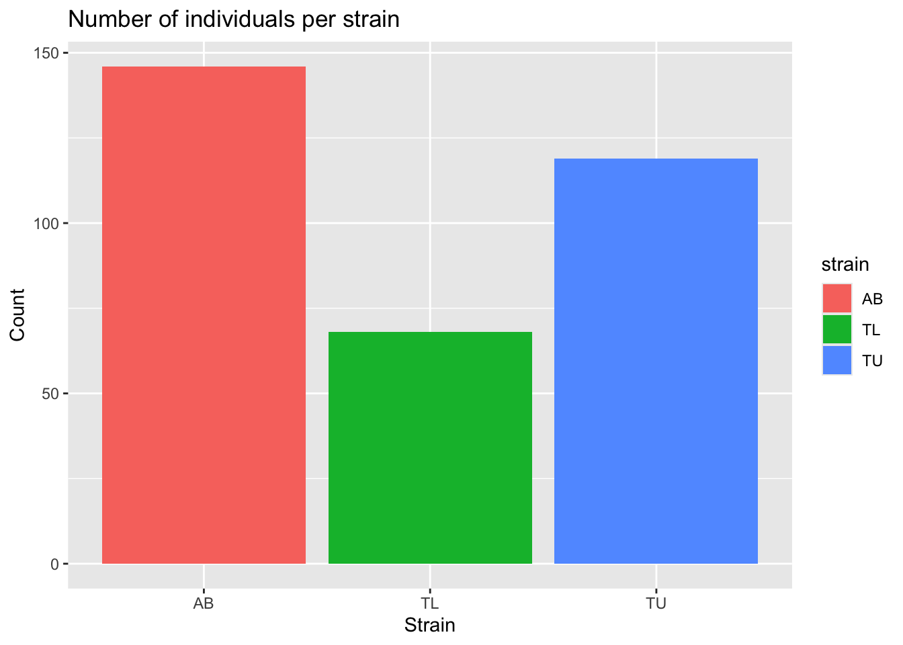
This helps us detect imbalance between groups, which may influence modelling later.
Distribution of body mass by strain
Understanding distributions is fundamental in EDA.
Since strain is a categorical variable, we examine how body mass differs between groups.
ggplot(zebrafish_clean, aes(x = strain, y = body_mass_g, fill = strain)) +
geom_boxplot() +
labs(
title = "Body mass by strain",
x = "Strain",
y = "Body mass (g)"
)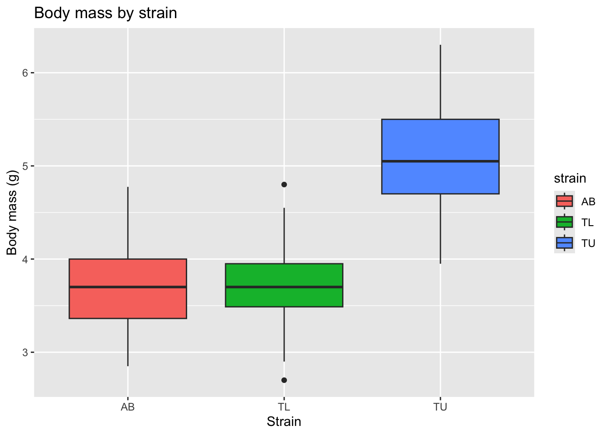
This allows us to compare medians, variability, and potential outliers across strains.
Body mass histogram
mass_hist <- ggplot(
data = zebrafish_clean,
aes(x = body_mass_g)
) +
geom_histogram(
aes(fill = strain),
alpha = 0.5,
position = "identity"
) +
scale_fill_manual(values = c("tan", "steelblue1", "violetred")) +
labs(
x = "Body mass (g)",
y = "Frequency",
title = "Body mass distribution"
)
mass_hist`stat_bin()` using `bins = 30`. Pick better value `binwidth`.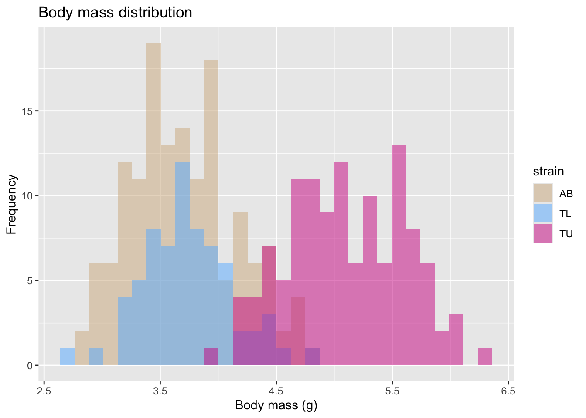
Sex differences in body mass
We explore whether body mass differs by sex.
ggplot(zebrafish_clean, aes(x = sex, y = body_mass_g, fill = sex)) +
geom_boxplot() +
labs(
title = "Body mass by sex",
x = "Sex",
y = "Body mass (g)"
)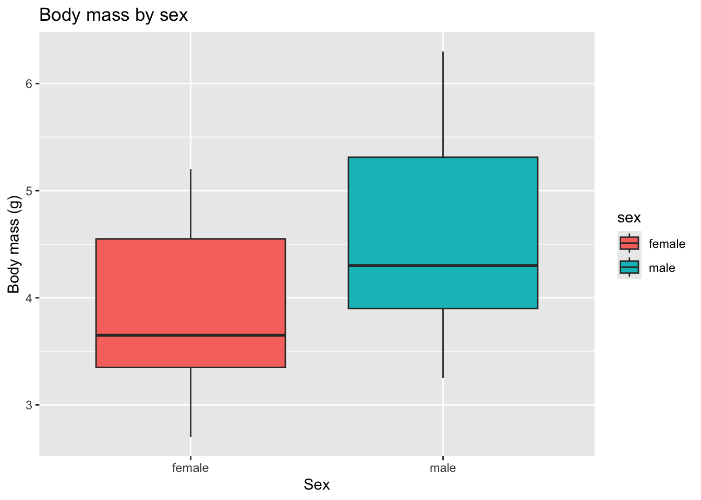
In many biological datasets, sex-based differences are substantial and biologically meaningful.
Caudal fin length histogram
fin_hist <- ggplot(
data = zebrafish_clean,
aes(x = caudal_fin_length_mm)
) +
geom_histogram(
aes(fill = strain),
alpha = 0.5,
position = "identity"
) +
scale_fill_manual(values = c("cyan3", "orchid", "yellow3")) +
labs(
x = "Caudal fin length (mm)",
y = "Frequency",
title = "Caudal fin length distribution"
)
fin_hist`stat_bin()` using `bins = 30`. Pick better value `binwidth`.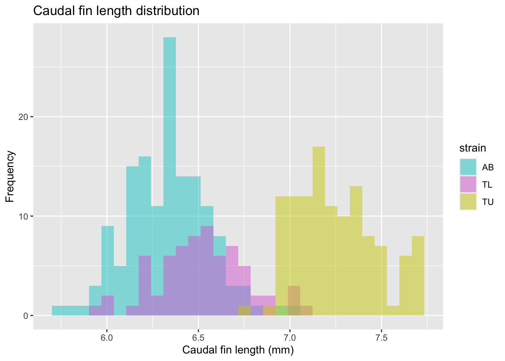
Caudal fin length boxplots + jitter
fin_box <- ggplot(
data = zebrafish_clean,
aes(x = strain,
y = caudal_fin_length_mm)
) +
geom_boxplot(
aes(color = strain),
width = 0.3,
show.legend = FALSE
) +
geom_jitter(
aes(color = strain),
alpha = 0.5,
show.legend = FALSE,
position = position_jitter(width = 0.2, seed = 0)
) +
scale_color_manual(values = c("cyan4", "purple", "darkorange")) +
labs(
x = "Strain",
y = "Caudal fin length (mm)"
)
fin_box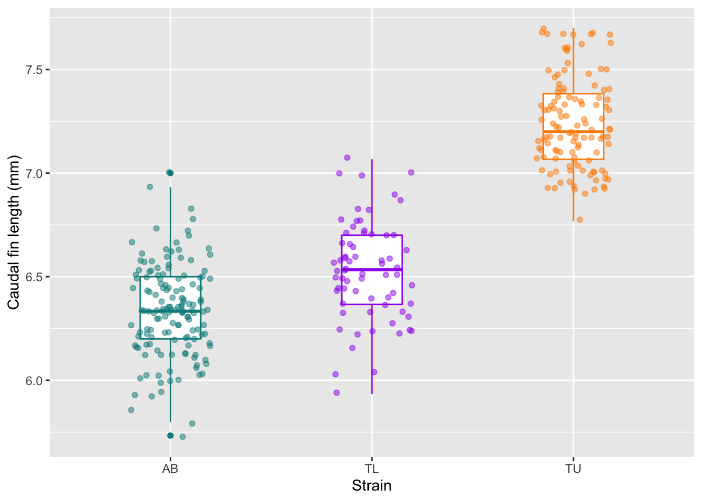
Correlation structure
We compute a simple correlation matrix for numeric variables.
zebrafish_clean |>
select(where(is.numeric)) |>
cor() body_length_mm body_width_mm caudal_fin_length_mm
body_length_mm 1.0000000 -0.2286256 0.6530956
body_width_mm -0.2286256 1.0000000 -0.5777917
caudal_fin_length_mm 0.6530956 -0.5777917 1.0000000
body_mass_g 0.5894511 -0.4720157 0.8729789
year 0.0326569 -0.0481816 0.1510679
body_mass_g year
body_length_mm 0.58945111 0.03265690
body_width_mm -0.47201566 -0.04818160
caudal_fin_length_mm 0.87297890 0.15106792
body_mass_g 1.00000000 0.02186213
year 0.02186213 1.00000000Correlation helps us detect:
- Redundancy between variables
- Strong linear associations
- Potential multicollinearity for future modelling
Relationship between body length and body width
We now examine relationships between two continuous variables: body length and body width in each strain.
A scatterplot helps detect:
- Linear or non-linear relationships
- Clustering by strain
- Separation between groups
ggplot(
data = zebrafish_clean,
aes(x = body_length_mm,
y = body_width_mm)
) +
geom_point(aes(color = strain),
alpha = 0.7, size = 2) +
labs(
title = "Body dimensions | Colored by strain",
x = "Body length (mm)",
y = "Body width (mm)"
)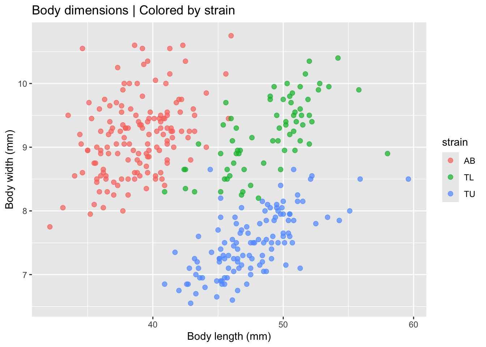
This visualization already suggests that strains differ morphologically. But lets fit a linear model to each strain.
ggplot(
data = zebrafish_clean,
aes(x = body_length_mm,
y = body_width_mm,
group = strain)
) +
geom_point(
aes(color = strain),
alpha = 0.7, size = 2) +
geom_smooth(
method = "lm",
formula = y ~ x,
se = FALSE,
aes(color = strain)
) +
labs(
title = "Body dimensions | Linear model per strain",
x = "Body length (mm)",
y = "Body width (mm)",
color = "Strain"
) +
theme(
legend.position = c(0.85, 0.15),
plot.title.position = "plot"
)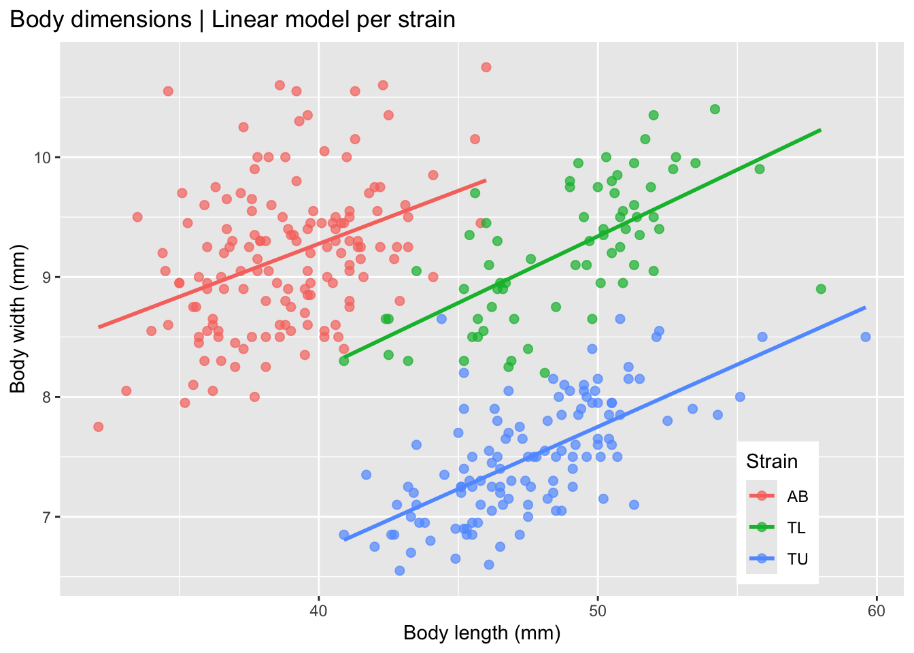
This plot shows that the strains indeed differ morphologically, with a positive correlation in each of the three strains.
So, what do we expect to find when we fit a linear model into the the combined dataset, i.e. not separated by strain? Let’s see this plot.
ggplot(
data = zebrafish_clean,
aes(x = body_length_mm,
y = body_width_mm)
) +
geom_point(alpha = 0.7, size = 2) +
geom_smooth(
method = "lm",
formula = y ~ x,
se = FALSE,
color = "gray50"
) +
labs(
title = "Body dimensions | Linear model for aggregated data",
x = "Body length (mm)",
y = "Body width (mm)"
) +
theme(plot.title.position = "plot")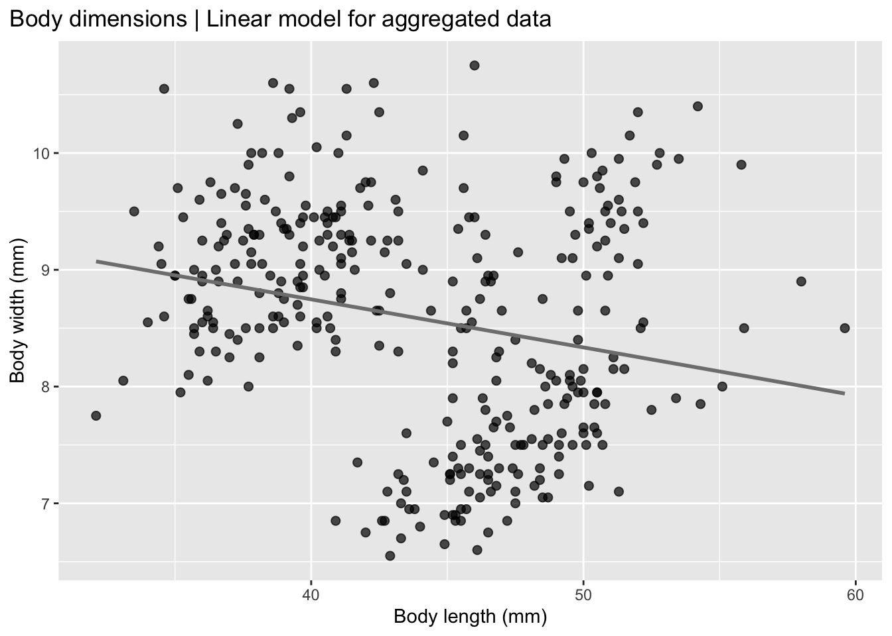
Now it seems that, for the whole group there is a negative correlation in zebrafish between body length and body width, when the data is pooled together, which is the opposite of what we see in the individual strain data.
This is called Simpson’s paradox which is a statistical phenomenon in which a trend observed in separate groups reverses or disappears when the groups are combined.
In other words, a relationship between two variables may appear positive (or negative) within each subgroup, but when all data are pooled together, the overall relationship shows the opposite pattern.
This occurs because a third variable (often called a confounder) influences both the grouping structure and the outcome. When that variable is ignored, the aggregated data can give a misleading conclusion.
A classic example is treatment effectiveness: a treatment may appear beneficial within both males and females separately, yet appear harmful when the sexes are combined, simply because the distribution of males and females differs across treatment groups.
Simpson’s paradox highlights the importance of stratification, careful experimental design, and understanding the data-generating process before interpreting aggregated results.
Mass vs. caudal fin length
Is there a relationship between weight and caudal fin size?
mass_fin <- ggplot(
data = zebrafish_clean,
aes(x = caudal_fin_length_mm,
y = body_mass_g)
) +
geom_point(
aes(color = strain,
shape = strain),
size = 2.5,
alpha = 0.7
) +
scale_color_manual(values = c("skyblue1", "coral", "seagreen3")) +
labs(
title = "Caudal fin length and body mass | Per strain",
x = "Caudal fin length (mm)",
y = "Body mass (g)",
color = "Strain",
shape = "Strain"
) +
theme(
legend.position = c(0.2, 0.7),
plot.title.position = "plot"
)
mass_fin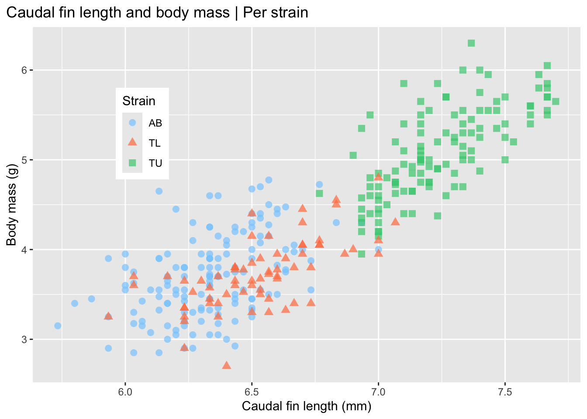
Caudal fin length vs. body length
fin_length <- ggplot(
data = zebrafish_clean,
aes(x = caudal_fin_length_mm,
y = body_length_mm)
) +
geom_point(
aes(color = strain,
shape = strain),
size = 2,
alpha = 0.8
) +
scale_color_manual(values = c("darkorange", "limegreen", "purple")) +
labs(
title = "Caudal fin and body length | Per strain",
x = "Caudal fin length (mm)",
y = "Body length (mm)",
color = "Strain",
shape = "Strain"
) +
theme(
legend.position = c(0.85, 0.15),
plot.title.position = "plot"
)
fin_length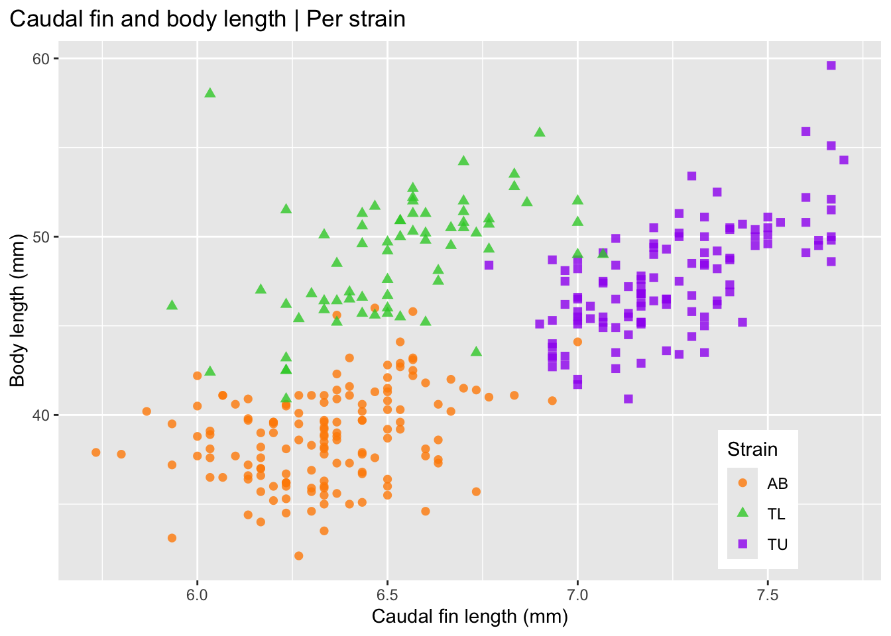
Facet by strain, color by sex
Include zebrafish sex:
ggplot(
zebrafish_clean,
aes(x = caudal_fin_length_mm,
y = body_mass_g)
) +
geom_point(aes(color = sex)) +
scale_color_manual(
values = c("plum", "sandybrown"),
na.translate = FALSE
) +
labs(
title = "Caudal fin length and body mass",
subtitle = "Male and female zebrafish by strain",
x = "Caudal fin length (mm)",
y = "Body mass (g)",
color = "Sex"
) +
theme(
legend.position = "bottom",
plot.title.position = "plot"
) +
facet_wrap(~ strain)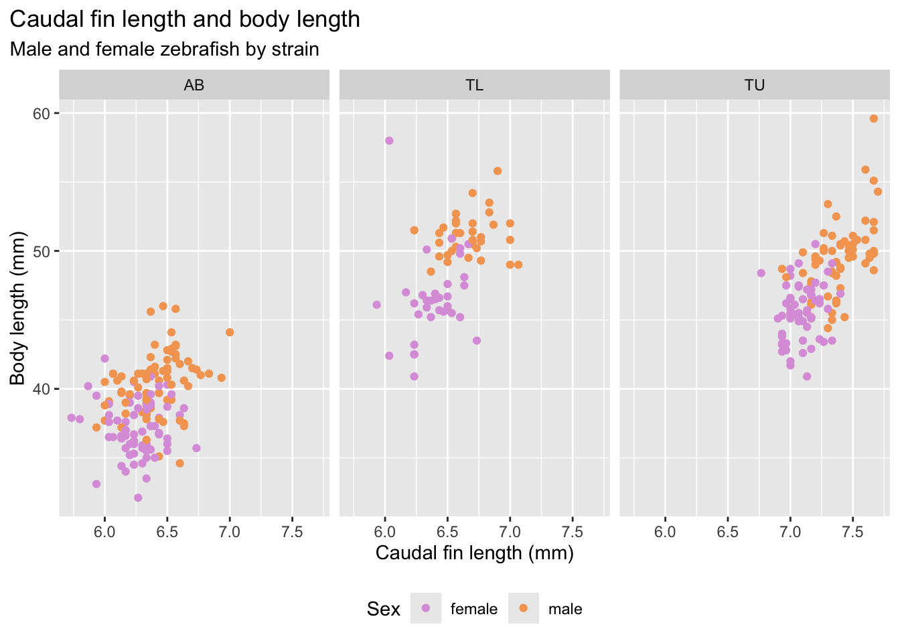
Matrix of plots for several variables
GGally::ggpairs() creates a matrix of plots that shows relationships between multiple variables at once. It works with both numeric (quantitative) and categorical (discrete) variables.
By default:
Two numeric variables
- Lower triangle: scatterplots
- Upper triangle: correlation coefficients (overall and by group)
One numeric and one categorical variable
- Lower triangle: coloured histograms
- Upper triangle: boxplots
Two categorical variables
- Stacked bar charts
In short, ggpairs() automatically chooses sensible plot types depending on the type of variables being compared, making it useful for quick exploratory data analysis.
GGally::ggpairs(zebrafish_clean,
mapping = aes(color = strain),
columns = c("body_length_mm", "body_width_mm",
"caudal_fin_length_mm", "body_mass_g",
"treatment", "sex"))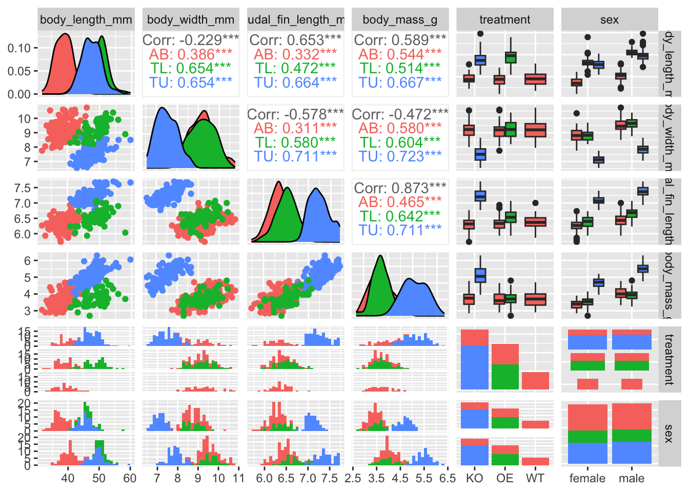
Key observations from EDA
From this exploratory analysis we observe:
- The dataset contains three strains with different sample sizes.
- There are some missing values, but most variables are well populated.
- Strains differ clearly in morphological characters.
- Body mass varies substantially across strains and sex.
- Some numeric variables are strongly correlated.
These findings would guide subsequent modelling decisions, such as:
- Including strains as a predictor in regression models.
- Checking for multicollinearity.
- Considering stratified analyses by sex.
Conclusion
Exploratory data analysis is not a formal statistical test. It is a structured process of:
- Understanding the dataset.
- Identifying patterns.
- Detecting potential issues.
- Generating hypotheses.
In applied biomedical research, careful EDA prevents modelling errors and strengthens the interpretability of results.